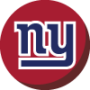
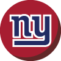
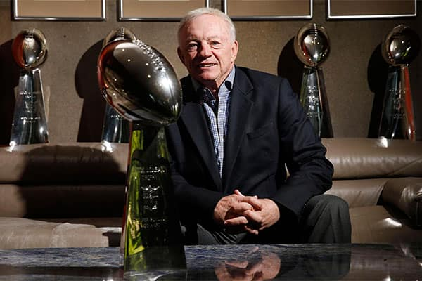

Cowboys Gameday: Week 14
Cowboys at Giants
7:30 p.m. SundayTV: Ch. 5
Radio: KRLD-FM (105.3), KMVK-FM (107.5, Spanish)
Line: Cowboys by 3
A win would mean ...
The Cowboys clinch the NFC East title for the 19th time and a division title for the 23rd time. Dallas moves to 7-0 on the road this season while winning its 12th straight.
A loss would mean ...
The Giants sweep the Cowboys in 2016 and strengthen their postseason prospects while winning their third straight over Dallas.
Advertisement
SportsDay’s Picks
Ezekiel Elliott struggled in his first meeting against the Giants, rushing for 51 yards on 20 carries. Since that game, Elliott hasn’t had a game with less than 83 yards rushing. (Tom Fox/Staff Photographer)
Brandon George: The Cowboys have won a franchise-record 11 consecutive games to become the first NFL team to clinch a playoff berth. A win would give the Cowboys the NFC East title and put them one win away from locking up home-field advantage throughout the playoffs. The Cowboys’ only loss came by one point to the Giants in the season opener. But this is a much different Cowboys team since then. That same argument could also be made for the Giants, who just had their six-game winning streak snapped last week with a loss at fast-rising Pittsburgh. A closer look at the Giants’ win streak, however, shows that their six wins came against teams with a combined 23-48-1 record. Cowboys, 31-27

Kate Hairopoulos: The Giants’ offense is a mess and ranks just 26th in the NFL. It twice took the ball inside Pittsburgh’s 10 in last week’s loss to the Steelers and came away with no points. But quarterback Eli Manning has a history of playing well against the Cowboys at home, and New York is on a playoff push. Manning has 1,241 yards passing, nine touchdowns, one interception and a quarterback rating of 104.8 in the last five home games against Dallas. He and receiver Odell Beckham Jr. will find a way to make this one close until the Cowboys dominate the fourth quarter. Cowboys, 27-20

Jon Machota: Dez Bryant and Odell Beckham Jr. won’t be on the field at the same time, but how each star receiver performs will go a long way toward determining the outcome. Bryant had only one catch for 8 yards in the Cowboys’ season-opening loss to the Giants. He’s been averaging 5.5 receptions per game over the last month. New York will likely load up to stop Ezekiel Elliott, so Dak Prescott will need to continue finding Bryant for big plays when he’s single-covered on the outside. After scoring four touchdowns against the Cowboys during his rookie year, Beckham has been kept out of the end zone in the three games since. Cowboys, 28-27

David Moore: The one smudge in an otherwise beautiful painting for the Cowboys took place in the opener. Dallas can’t eliminate the imperfection Sunday night, but the team can make amends for that one flaw with a victory and an NFC East title. A division title isn’t really in doubt. The Cowboys own a three-game lead over the Giants with four to play. A loss in this game would only delay the inevitable. This is more about the Cowboys making the point that the result in the opener was a fluke. This is about a young, brash team wanting to show how much it’s improved since that initial meeting. The players can say they aren’t driven by this sort of motivation, but you can believe it’s there. Cowboys, 31-24

Tim Cowlishaw: Cowboys atone for one-point loss in opener as Dez outperforms Odell Beckham Jr. for a change and Zeke rushes for 150 yards instead of 51 this time around. Cowboys, 25-24

Rick Gosselin: Dak Prescott and Ezekiel Elliott will be out to prove they are different players from the season opener when neither had much of an impact in the Cowboys’ only loss of the season. Cowboys, 20-17

Barry Horn: The streak can’t go on forever, can it? Giants, who are at home, will be hungrier team. If you can’t turn over Eli Manning, your team might be in big trouble. Giants, 28-27

Kevin Sherrington: Eli breaks Cowboys’ streak, but it doesn’t start the wrong kind. Giants, 28-24
You make the call
We want to know who you who think will win this week’s Cowboys game. Enter your score below, and see which team other readers think will take home the “W.” Scores plotted on the lower-right of the chart indicate a predicted Cowboys victory, upper-left indicate a predicted opponent victory. (Note: Only scores below 60 will be shown.)
Who do you think will win? Enter the scores for each team, then click the "submit" button.
Thank you for your submission
You picked the to win, . Share your prediction on social media:
of readers are picking the to win this week by an average of points.
Cowboys:
:
Times predicted:
Advertisement
Bob Sturm’s scouting report
SituationEdgeIn the know
When the Cowboys run the ball
Edge
Dallas provides a massive challenge for a defense, but with Damon Harrison and Johnathan Hankins, the Giants are as prepared as a team can be to try to slow down the big zone running game the Cowboys feature. The Giants are a very stingy run defense and are a wall on the goal line. Dallas will continue to have the edge, but with their multiple tight end sets sputtering, this seems like a smaller edge than usual.
When the Cowboys pass the ball
EdgeThis is where the game can swing. The Vikings were very aggressive in their coverage that made Dak Prescott and the Cowboys seem reluctant to air the ball out. For the Giants, losing DE Jason Pierre-Paul is a huge blow for a team that was starting to get sacks, but their secondary is difficult to expose. I expect the Cowboys will use the middle of the field a bit more with Cole Beasley and Jason Witten underneath.
When the Giants run the ball
Edge
It’s not often when you play the 32nd (Vikings) and 31st (Giants) rushing offenses in back-to-back weeks. The Giants’ offense is one-dimensional because they don’t scare anyone with their running game, whether it be their backs or the offensive line. This matchup should play into the hands of linebackers Sean Lee and Anthony Hitchens.
When the Giants pass the ball
EdgeThe Giants have a number of options, with Odell Beckham the man who destroys game plans all by himself. One might expect that the Giants will try to pull out all of the stops against the Cowboys, but for the most part, their offense is about getting the ball out quickly to save hits on Eli Manning. It would be a mistake to call this offense elite. It simply comes down to containing Beckham.
Special teams
EdgeThe last time the Cowboys played in New York, they had a gritty effort ruined by a Dwayne Harris kickoff return for a touchdown. Otherwise, on special teams, the Giants seem to struggle. Veteran Robbie Gould has missed three extra points in the last three weeks. The Cowboys have the better kicker in Dan Bailey but must contain Harris.
Intangibles
EdgeThis is the Giants’ last stand in keeping alive their slim hopes of winning the division. A wild-card spot is still a strong possibility. This means that even without Pierre-Paul, the Cowboys should expect the Giants’ best punch in a stadium where the Cowboys have had success over the years.
Bob Sturm’s spotlight
For the second straight week, the Cowboys will line up against one of the better safeties in the NFL. This time, it’s Landon Collins, the former force from Alabama, who was selected six picks behind Cowboys safety Byron Jones in the 2015 draft.
Collins is second in the NFL in interceptions and makes plays all over the field to help the Giants defense look complete in the secondary. He was a running back as a young player until he was bumped off the position because his high school teammate was Eddie Lacy.
In Week 1, Collins made a big play in the first meeting with the Cowboys by pulling a ball loose from Dez Bryant that could have been a touchdown. Collins looks like the new-age safety who often can do linebacker duties in making plays behind the line of scrimmage. He can also deliver hits that opponents remember but has added a component to his game where he can patrol the deep portion of the field and end games with plays in the fourth quarter.
The NFC Defensive Player of the Month for November has tremendous confidence in his teammates in the secondary, which has three corners who can play tight knowing they have Collins lurking overhead.
Sturm’s prediction: The Cowboys have not played a complete game in a few weeks and have still been good enough to win. But with a healthy lead in the division, I am left to wonder if their urgency and desperation will be able to match the Giants. Giants, 24-21
Bill Kostroun/The Associated Press
Advertisement
Top photo: Jae S. Lee
Read more from The Dallas Morning News
Chasing 1,808
Track Ezekiel Elliott’s progress throughout the season as he makes a run at Eric Dickerson’s NFL rookie rushing record.
Trappings of legend
While Jerry Jones doesn’t live in the past, an exclusive look inside the Cowboys owner’s office is a journey through the franchise’s history.

Ringing endorsement
For 12 seasons with the Dallas Cowboys, Darren Woodson would routinely wreak havoc on Sundays, then onnect with his best friend on Tuesdays.